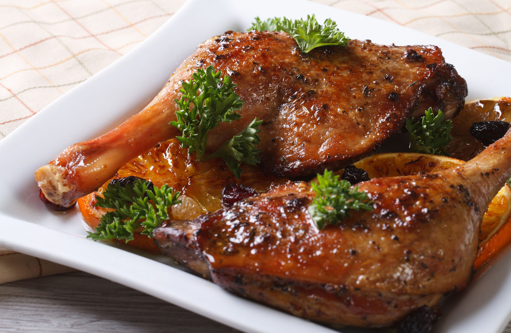

Pato Confitado

Ingredientes
- 4 piernas de pato
- 2 tazas de grasa de pato
- 4 dientes de ajo machacados
- 4 ramitas de tomillo fresco
- 4 ramitas de romero fresco
- Sal y pimienta negra
Tiempos:
- Preparación: 30 minutos
- Cocina: 3 horas
- Total: 3:30 horas
Pasos
- Salpimentar las piernas de pato generosamente.
- Colocar las piernas de pato en un recipiente de vidrio o cerámica lo suficientemente grande para que quepan todas las piernas sin amontonarse.
- Agregar el ajo machacado, las ramitas de tomillo y romero.
- Cubrir las piernas de pato con la grasa de pato.
- Cubrir el recipiente con papel film y dejar reposar en la nevera durante al menos 24 horas y hasta 48 horas.
- Preparar el horno a 135°C.
- Sacar las piernas de pato de la grasa y retirar cualquier exceso de hierbas y ajo.
- Colocar las piernas de pato en una bandeja para horno y hornear durante aproximadamente 2 horas, o hasta que la carne esté suave y se desprenda fácilmente del hueso.
- Retirar del horno y dejar enfriar a temperatura ambiente.
- Para servir, calentar una sartén y dorar las piernas de pato en la grasa hasta que estén doradas y crujientes.